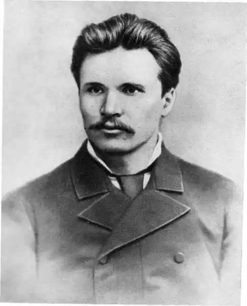
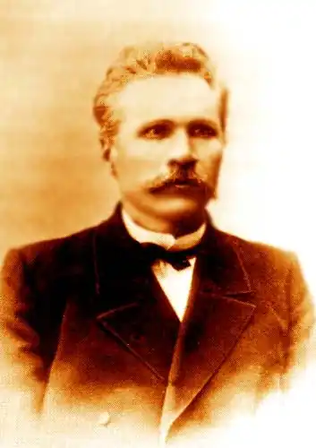

Яворницький Дмитро Іванович
(1855-1940)
історик, археолог, етнограф, фольклорист, письменник Народився 7 листопада 1855 року в селі Сонцівці Харківського повіту (нині село Борисівка Дергачівського району Харківської області) в родині сільського псаломщика і селянки. З 1867 року навчався у Харківському повітовому училищі. 1874 року вступив до Харківської духовної семінарії, але не закінчив її і 1877 року вступив до Харківського університету на історико-філологічний факультет. Слухав лекції Олександра Потебні та Миколи Сумцова, вільнолюбні ідеї яких справили вплив на формування світогляду Яворницького в умовах заборони царським урядом у 70—80-х роках українського слова та переслідувань українських діячів культури. По закінченні університету 1881 року був залишений як обдарований студент позаштатним стипендіатом для підготовки до професорського звання. Водночас працює у 3-й Харківській чоловічій гімназії викладачем історії. З 1897 року, відмовившись від офіційно запропонованої на факультеті теми з загальної історії, починає студіювати історію Запорожжя. У 1881—1882 роках вийшла перша його праця — "Виникнення і будова Запорозького Коша", за що його було позбавлено університетської стипендії. Здійснює експедиції по місцях Запорозької Січі. З весни 1884 року читає серію публічних лекцій під назвою "Про запорозьких козаків", бере участь у роботі Історико-філологічного товариства разом з О.Потебнею, М.Сумцовим, Д.Багалієм, П.Єфименком. 1884 року університетське начальство за сепаратизм та відверте українофільство звільняє Яворницького з посади в університеті. Позбавлений засобів до існування і можливості займатися улюбленою працею, 1885 року він переїжджає до Петербурга, де знайомиться з І.Рєпіним, О.Сластьоном, Д.Мордовцевим, М.Микешиним, пише низку статей з історії Запорожжя, передмову до поеми "Гайдамаки", що вийшла російською мовою з ілюстраціями О.Сластьона. Того ж року Яворницький стає членом Археологічного товариства, викладає історію в кількох навчальних закладах, влаштовує суботні вечори, які відвідували його земляки, письменники, художники, студентська молодь. За порадою Яворницького Ілля Рєпін починає працювати над картиною "Запорожці пишуть листа турецькому султанові", користуючись матеріалами та колекцією вченого. Дмитро Іванович надихнув Миколу Лисенка на створення опери "Тарас Бульба". 16 червня за політичну неблагонадійність Яворницького знову позбавлено права викладати і звільнено з роботи. 1888 року опубліковано двотомник "Запорожжя у залишках старовини і переказах народу" та "Збірник матеріалів для історії запорозьких козаків". 1891 року Яворницький повертається до Харкова в пошуках роботи, але, не знайшовши її, знову їде в Петербург. Навесні 1892 року виходить перший том "Історії запорозьких козаків", а невдовзі Яворницького посилають у трирічне відрядження, а фактично висилають у Середню Азію, де він працює молодшим чиновником особливих доручень при туркестанському генерал-губернаторі в Самарканді. 1895 року, відбувши заслання, вчений від’їжджає до Варшави, планує скласти у Варшавському університеті магістерський іспит. З 1897 року власті дозволили Яворницькому жити в Москві, де він стає приват-доцентом Московського університету. 1902 року захистив у Казанському університеті магістерську дисертацію. Того ж року переїхав до Катеринослава, став директором Музею старожитностей Катеринославської губернії. З 1920 по 1933 рік працював в Інституті народної освіти у Катеринославі, у 1925—1929 році завідував кафедрою українознавства, був професором. З 1927 року — відповідальний керівник експедиції з виявлення старожитностей під час будівництва Дніпрогесу. До останніх днів життя завідував Дніпропетровським історичним музеєм, брав участь у численних експедиціях по місцях Запорозької Січі. Крім фундаментальної "Історії Запорозьких козаків" у трьох томах (1892—1897), написав ще понад двісті праць, присвячених здебільшого українській історії. Виступав також як поет і прозаїк, уклав "Словник української мови" (1920). З 1929 року — дійсний член Академії наук УРСР. Помер Дмитро Іванович Яворницький 5 серпня 1940 року. Поховано видатного вченого у Дніпропетровську, на території створеного ним музею, що носить його ім’я. Дмитро Іванович Яворницький був людиною надзвичайно різнобічних інтересів, ініціативним і невтомним трудівником на ниві національної культури. З його іменем насамперед пов’язана подвижницька праця із збирання, дослідження й популяризації історії запорозького козацтва. Він залишив помітний слід як археолог, етнограф, фольклорист, лексикограф, автор великої кількості наукових статей, публікацій у періодичних виданнях. Праця над темами з історії українського козацтва в умовах дії в Росії Емського та Валуєвського указів про заборону української культури була виявом його патріотизму та громадянської мужності. Усе, що вийшло з-під пера невтомного дослідника, позначене його особливою любов’ю до історії Запорожжя. Яворницький був одним з перших українських вчених, які свої дослідження грунтували на комплексному вивченні того чи іншого історичного явища. Як і Федір Вовк, Володимир Антонович, Павло Чубинський, Михайло Грушевський, він свої історичні дослідження робив на базі археології, археографії, етнографії, фольклору, мовознавства. Яворницький був одним з перших некабінетних вчених. За життя йому довелося брати участь у розкопках сотень курганів, козацьких могил. Він був палким популяризатором наукової археології як основи історичної науки і обстоював захист археологічних об’єктів від скарбошукачів. Вагомий внесок зробив Яворницький у становлення історичного краєзнавства. Крім історії Запорожжя, яка й досі не втратила свого значення, він написав історію міста Катеринослава, села Фаліївки-Садової на Херсонщині, видав альбоми "української старовини" та "Дніпрові пороги", науково-популярне видання "Слідами запорожців", безліч розвідок та популяризаторських статей, якими започаткував жанр так званої краєзнавчої, або, як нині її називають туристської літератури, надаючи їй великого значення у популяризації рідної історії серед широких верств населення. Як збирач і колекціонер старожитностей, Дмитро Іванович був одним з перших в Україні організаторів музейної справи, теоретиком-музеєзнавцем, архівістом та археографом, знавцем архівної справи. Від самого початку своєї діяльності він дослідив безліч нових матеріалів, документів в архівах Москви, Петербурга. Завдяки його невтомній праці вони побачили світ і дали можливість сучасникам поновому оцінити Запорожжя як світове явище, як лицарську організацію з демократичним парламентським устроєм. На противагу російським історикам XIX століття, які висвітлювали Запорожжя з точки зору імперської офіційної історіографії, Яворницький формулював свої висновки на основі архівних матеріалів, пам’яток археології, літописання, усної народної творчості і переконливо доводив, що Січ була прогресивним явищем протягом усього існування і виникла як протест проти духовного насильства та поневолення українського народу. Заперечуючи тезу Миколи Костомарова, Олександра Лазаревського та інших російських істориків, які твердили про історичну неминучість загибелі Запорозької Січі, Яворницький доводив, що знищено її було тому, що "Весь лад Запорозького Війська з його широко демократичними засадами не пасував до корінного ладу Великої Росії". Демократизм і неупередженість ученого виявилися і в об’єктивній оцінці ним гайдамаччини як національно-визвольного руху. Вслід за Тарасом Шевченком він висловлює гнівний осуд фальсифікаторам гайдамаччини й козацтва історикові Скальковському, який беззастережно називав гайдамацький рух розбійницьким. Щодо цього питання він висловив свої думки у непересічному й на сьогодні дослідженні "Запорожці в поезії Т.Г.Шевченка" (1912), яка й нині працює проти фальсифікаторів творчості національного генія України. 1914 року, коли було заборонено святкування 100-річчя від дня народження Кобзаря, Яворницький, як голова ювілейного катеринославського комітету, ціною великих зусиль, ризикуючи вкотре втратити роботу, один в усій російській імперії домігся від влади офіційного дозволу на проведення ювілею. Окремою яскравою сторінкою творчої біографії Яворницького є його етнографічна та фольклористична діяльність. Збірник зібраних і записаних ним в експедиціях протягом 1878—1905 років взірців народного мелосу — "Малоросійські народні пісні" (1906) сучасники називали кращим серед подібних праць у тогочасній Росії. Всебічно вивчаючи життя й побут українського народу, Яворницький виявляв великий інтерес до народного мистецтва, зокрема до народної вишивки та писанкарства. Він дослідив також звичай розмальовувати хати узорами й уперше кваліфікував цей звичай як народне мистецтво, гідне вивчення. Яворницькому належить першість відкриття й дослідження петриківського декоративного розпису, нині відомого в усьому світі. Зразки цього мистецтва завдяки Яворницькому 1905 року потрапили через археолога та етнографа Федора Вовка до колекції українського розділу етнографічного відділу Російського музею у Петербурзі. А в Катеринославському історичному музеї він зібрав близько тисячі різноманітних узорів цих розписів. І взагалі, створений Яворницьким Катеринославський музей був свого часу винятковим явищем культури, оскільки зберігав унікальні твори народного мистецтва, речі побутового вжитку, архівні матеріали. Ще однією важливою рисою Яворницького як збирача народної творчості є те, що він надавав великого значення виявленню і популяризації талановитих народних співців-кобзарів та розповідачів. Дмитро Іванович відіграв велику роль у житті й творчості багатьох кобзарів, зокрема Пасюги, Кучугури-Кучеренка, Кожушка та ін. Завдяки енергії й завзяттю немолодий вже Яворницький до початку будівництва Дніпрогесу та під час його організовував обстеження будівельних робіт і виявив багато цінних знахідок, які могли бути назавжди втрачені. Символічною в житті невтомного вченого й полум’яного патріота України була його остання подорож човном дніпровськими порогами перед їх затопленням. Він розумів, що, знищуючи пороги, котрі кілька століть були символом волі й звитяги запорожців, влада намагається стерти в пам’яті народу навіть згадки про славне минуле України. Незважаючи на похилий вік, Яворницький піклувався про свій музей, збирав лексикографічний матеріал до словника української мови, який у часи війни було втрачено. Зберігся лист вченого за квітень 1939 року до російського літературознавця В. Данилова, в якому Яворницький пише: "Тепер залишилося у мене на руках 50000 народних слів — цілі пуди наукового матеріалу, але чи побачу я його в друці, аллах знає, адже мені 83-й рік". До останніх днів вчений дотримувався свого життєвого кредо: "Працюй, працюй, не вдивляючись уперед і не озираючись назад; працюй, не чекаючи нізвідки і ні від кого ні нагороди, ні подяки; працюй, поки служать тобі руки і поки б’ється живе серце у твоїх грудях; працюй на користь свого народу і на користь своєї Батьківщини..."